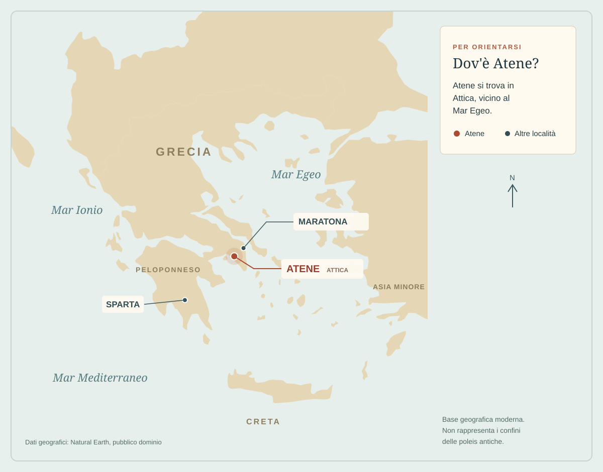
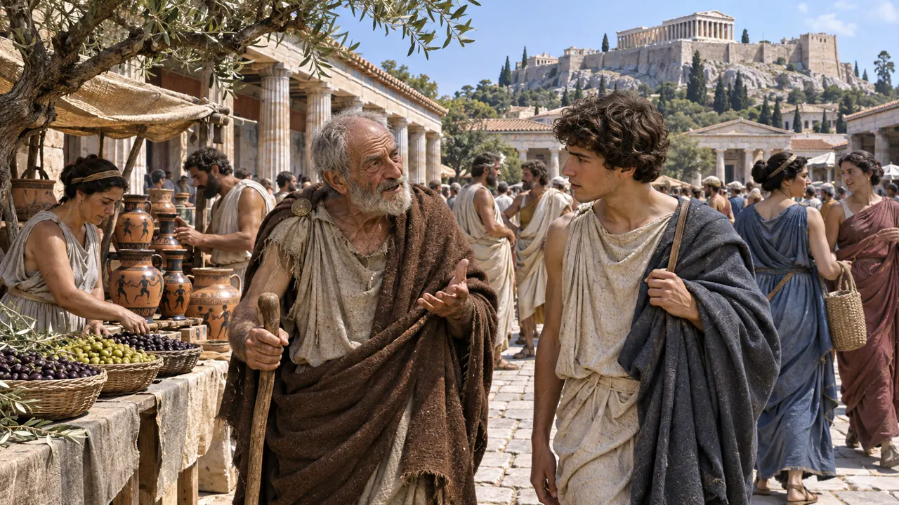

Atene nel V secolo a.C. · Ricostruzione illustrativa
Una storia di libertà, partecipazione e profonde esclusioni ↓
01 / La domanda
Chi può dire «noi»?
Immaginate di vivere in una città nella quale le decisioni più importanti vengono discusse in pubblico. Non è un re a stabilire tutto: i cittadini si riuniscono, ascoltano, parlano e votano. È l'Atene del V secolo a.C.
Ma sotto la parola cittadini non ci sono tutti gli abitanti. Molti abitanti non possono partecipare alle decisioni politiche, anche se lavorano, commerciano, pregano e contribuiscono alla vita della città. Per capire Atene dobbiamo tenere insieme queste due realtà.
LA DOMANDA CHE CI GUIDACome nasce una città nella quale il potere viene discusso, e perché questa partecipazione riguarda solo una parte della popolazione?
02 / Lo spazio
Una città aperta al mare
Atene sorge nell'Attica, una regione della Grecia centrale che si protende verso il Mar Egeo. Non è soltanto un centro urbano: la sua polis comprende la città, i villaggi, le campagne e il territorio circostante.

Dove si trova Atene? La città è in Attica, nella Grecia continentale. Sparta si trova nel Peloponneso. Carta schematica su base geografica moderna; non rappresenta i confini delle póleis antiche. Dati geografici: Natural Earth.
Al centro della città si alza l'Acropoli, la parte elevata con i principali santuari. Più in basso si trova l'agorà, luogo di incontri, scambi e attività pubbliche. Il porto del Pireo, sviluppato soprattutto nel V secolo a.C., collega Atene alle rotte dell'Egeo e del Mediterraneo.
Acropoli
La collina sacra, visibile da lontano.
Agorà
Il cuore degli scambi e della vita pubblica.
Pireo
Il porto che avvicina la città al mare.
In sintesi. Terra, città e mare fanno parte della stessa comunità politica. Ma chi comanda in questa comunità?
03 / Prima del cambiamento
All'inizio il potere è di pochi
Nei primi secoli della polis il governo è controllato dalle famiglie aristocratiche, i nobili proprietari di terre. Le decisioni e le cariche più importanti restano concentrate nelle mani di un gruppo ristretto.
Molti piccoli agricoltori faticano a vivere della terra. Se si indebitano e non riescono a restituire ciò che devono, rischiano di perdere la libertà. Le tensioni crescono: una città divisa da debiti e privilegi fatica a riconoscersi come comunità.
Terra e potere a pochi→Debiti e dipendenza→Conflitto sociale→Ricerca di nuove regole
In sintesi. La democrazia ateniese non appare all'improvviso: nasce da conflitti e riforme successive.
04 / Le fratture
Dalla crisi alle riforme
Solone e il peso dei debiti
Solone interviene per affrontare la crisi: cancella i debiti garantiti sulla persona e vieta la schiavitù per debiti dei cittadini ateniesi. Non elimina però tutte le disuguaglianze né la schiavitù in generale. La ricchezza continua a incidere sull'accesso alle cariche.
La tirannide di Pisistrato
Le tensioni non scompaiono. Pisistrato concentra il potere personale attraverso una tirannide, alternando rovesci e ritorni; dopo di lui governano i figli. Nel mondo greco «tiranno» indica chi conquista un potere personale fuori dalle regole tradizionali: il termine non basta, da solo, a descrivere ogni aspetto del suo governo.
Clistene e una nuova organizzazione
Clistene riorganizza il corpo civico in dieci tribù, combinando gruppi provenienti da zone diverse dell'Attica. Questo rende meno semplice identificare la politica con il potere delle vecchie famiglie. La nuova organizzazione è un passaggio decisivo verso la democrazia, che si sviluppa ancora nel V secolo.
La partecipazione si amplia
Riforme successive, tra cui quelle associate a Efialte e Pericle, rafforzano istituzioni nelle quali partecipano i cittadini. Per alcuni incarichi e attività pubbliche vengono introdotti compensi, che facilitano anche la presenza di chi deve lavorare.
In sintesi. Solone affronta la crisi dei debiti; Clistene riorganizza la comunità civica; la democrazia prende forma attraverso ulteriori cambiamenti.
05 / La politica
La parola passa ai cittadini
Democrazia deriva dalle parole greche demos, popolo, e kratos, potere. Ad Atene indica una forma di governo nella quale i cittadini partecipano direttamente a decisioni pubbliche: non eleggono semplicemente rappresentanti che decidono tutto al posto loro.
I
Assemblea · Ecclesìa
I cittadini maschi adulti si riuniscono, discutono e votano su leggi, guerra e altre decisioni. L'assemblea si riunisce sulla collina della Pnice.
II
Consiglio · Bulè
Il consiglio dei 500, con cinquanta membri per ciascuna delle dieci tribù, prepara i lavori dell'assemblea e svolge compiti amministrativi. I consiglieri sono scelti per sorteggio fra gli aventi diritto.
III
Tribunali e magistrati
Numerosi cittadini compongono i tribunali popolari. Molti incarichi sono assegnati per sorteggio, ma non tutti: gli strateghi, per esempio, sono eletti e guidano l'esercito.
Una parola da capire: sorteggio
È una scelta affidata alla sorte fra persone che hanno diritto a concorrere. Per gli Ateniesi può limitare il monopolio delle cariche, ma non elimina le differenze di ricchezza e di influenza.
L’ostracismo era una procedura con cui i cittadini potevano decidere l'allontanamento temporaneo di una persona ritenuta pericolosa per la città. Non era un normale processo penale e non comportava automaticamente la perdita dei beni.
Il dibattito è un'arma politica: chi sa parlare può convincere l'assemblea. La partecipazione, però, non è sempre semplice: richiede tempo, conoscenze e la possibilità concreta di lasciare il lavoro.
In sintesi. L'assemblea decide, il consiglio prepara, i magistrati amministrano e guidano. Il demos ateniese non coincide con tutta la popolazione.
06 / La società
La città di chi?
Nelle strade di Atene si incontrano persone con condizioni molto diverse. Non basta abitare nella stessa città per avere gli stessi diritti.
01
Cittadini
Gli uomini riconosciuti come cittadini partecipano alla vita politica e militare. La cittadinanza dipende dalle regole della polis; nel V secolo una legge associata a Pericle rende più restrittivi i requisiti di nascita.
02
Donne ateniesi
Fanno parte della comunità civica e religiosa, ma non partecipano all'assemblea e non ricoprono cariche politiche. Il loro ruolo non si esaurisce però nel silenzio: partecipano alla vita familiare, economica e religiosa, anche se le possibilità cambiano secondo condizione e contesto. Le fonti sono spesso scritte da uomini.
03
Meteci
Stranieri residenti, liberi ma privi dei diritti politici dei cittadini. Molti lavorano nel commercio e nell'artigianato; contribuiscono alla vita economica e hanno obblighi verso la città.
04
Persone schiavizzate
Non sono libere e sono sottoposte al potere dei proprietari. Lavorano in case, botteghe, campagne e miniere, in condizioni variabili, spesso durissime. La loro fatica sostiene anche la vita economica della polis.
FERMATI A PENSAREChe cosa cambia nel giudizio su una democrazia quando chiediamo chi può partecipare e chi ne è escluso?
In sintesi. La polis offre partecipazione politica ai cittadini ma lascia fuori molti abitanti; esclusione politica non significa assenza dalla vita della città.
07 / La cultura
Una città che impara, discute, crea
La vita ateniese si svolge tra casa, botteghe, campi, santuari, palestre, assemblee e teatri. Il lavoro di artigiani e commercianti sostiene gli scambi; olio, vino e ceramiche circolano sulle rotte del Mediterraneo.
L'educazione dei ragazzi cittadini comprende, secondo possibilità e famiglia, lettura e scrittura, musica e ginnastica. Le ragazze sono generalmente educate nell'ambiente domestico; esperienze e possibilità non sono uguali per tutte le famiglie.
Teatro
Tragedie e commedie sono rappresentate in feste religiose e invitano la città a riflettere sui conflitti umani e politici.
Filosofia
Nel V secolo discutere e interrogare le idee diventa centrale; Socrate è una delle figure associate a questo modo di cercare.
Arte e religione
Templi, sculture, feste e riti collegano bellezza e culto. Il Partenone è costruito sull'Acropoli tra il 447 e il 432 a.C.
Nel V secolo Atene guida una rete di alleanze marittime e accresce la propria potenza. Quel predominio produce risorse e sicurezza per alcuni, ma anche tensioni e subordinazione per città alleate. La cultura fiorisce dentro una storia fatta anche di potere e conflitti.
In sintesi. Atene è una città di parole, immagini e riti: la sua ricchezza culturale cresce insieme alle sue contraddizioni.
08 / La battaglia
Maratona, 490 a.C.
Una spiaggia dell'Attica, una flotta persiana e una città che teme per la propria sorte: la battaglia di Maratona diventa uno degli episodi più ricordati della storia ateniese.
Perché si combatte?
Tra l'impero persiano e alcune città greche esistono tensioni e conflitti. Dopo la rivolta delle città greche della Ionia contro il dominio persiano, sostenuta anche da Atene, il re Dario I invia una spedizione nell'Egeo. Nel 490 a.C. le forze persiane arrivano nella pianura di Maratona, in Attica.
Gli Ateniesi, affiancati dagli alleati di Platea, raggiungono la pianura. Chiedono aiuto a Sparta, ma gli Spartani, trattenuti da una festività religiosa, arrivano dopo lo scontro secondo il racconto di Erodoto. Tra i comandanti ateniesi c'è Milziade.
ATTICA · 490 A.C.
Come cambia lo scontro?
Seleziona le fasi per seguire una ricostruzione schematica. Le posizioni e il terreno sono semplificati: non è una carta storica.
RICOSTRUZIONE SCHEMATICA
PERSIANI
SCHIERAMENTI
ATENIESI E PLATEESI
I due eserciti sono schierati nella pianura; i Greci affrontano la spedizione persiana.
Che cosa accade?
Gli opliti erano soldati di fanteria che combattevano con scudo, lancia e protezioni. In una falange si disponevano in ranghi serrati: la forza della formazione dipendeva dalla capacità dei compagni di restare vicini.
La principale narrazione antica è quella di Erodoto, scritta alcuni decenni dopo gli eventi. Secondo il suo racconto, durante la battaglia il centro dello schieramento greco arretra; sulle ali i Greci prevalgono e poi si rivolgono contro i nemici. Molti Persiani tornano verso le navi. Gli Ateniesi rientrano poi rapidamente per proteggere la città.
La vittoria rafforza la fiducia di Atene, ma non conclude le guerre persiane: dieci anni dopo una nuova invasione, sotto Serse, coinvolgerà anche le Termopili e Salamina. Erodoto riporta cifre precise sui caduti; sono i numeri della sua testimonianza e non possiamo considerarli automaticamente certi.
Il corridore: storia e leggenda
Erodoto racconta che il messaggero Filippide corse da Atene a Sparta prima della battaglia per chiedere aiuto. La celebre corsa da Maratona ad Atene conclusa con la morte del messaggero compare in tradizioni successive: è parte della memoria dell'evento, non un fatto accertato da Erodoto.
In sintesi. Nel 490 a.C. Ateniesi e Plateesi respingono la spedizione persiana; la fonte antica va distinta dalle leggende nate in seguito.
09 / Conclusione
La forza e il limite di un'idea
Atene sperimenta la partecipazione diretta di molti cittadini alle decisioni collettive. Questo rende la politica un'attività pubblica e dà grande importanza alla parola, al confronto e alle regole comuni.
Allo stesso tempo, la comunità politica è ristretta e la città esercita potere su altri. Per capire la sua eredità dobbiamo osservare insieme l'invenzione di nuove forme di partecipazione e le esclusioni su cui quella società si regge.
La domanda non è soltanto chi governa. È anche: chi viene riconosciuto come parte della città?
Sintesi finale. Il conflitto sociale porta a riforme successive. Nell'Atene del V secolo i cittadini maschi partecipano a istituzioni come assemblea e consiglio. Donne, meteci e persone schiavizzate restano esclusi dalla politica. Arte, teatro, religione e filosofia attraversano la vita della polis. La vittoria di Maratona è un episodio delle guerre persiane e diventa parte della memoria ateniese. Comprendere Atene significa tenere insieme partecipazione, esclusione e potere.
Per ripassare
La mappa delle idee
Segui il filo: le trasformazioni politiche nascono da conflitti e producono una comunità insieme partecipata ed esclusiva.
ATENE · LA POLIS
TERRITORIO
Attica → Acropoli, agorà, Pireo → scambi
CRISI E RIFORME
Debiti → Solone → Clistene → istituzioni del V secolo
POLITICA
Cittadini → assemblea → consiglio → tribunali e magistrati
SOCIETÀ
Partecipazione limitata → esclusione di donne, meteci e schiavi
CULTURA E POTERE
Teatro, arte, filosofia → egemonia e tensioni
MARATONA
490 a.C. → Atene e Platea → vittoria sui Persiani
Quello che conta
I saperi irrinunciabili
Spunta ciò che sai spiegare con parole tue. Il progresso resta su questo dispositivo.
0 di 12 completati
Le parole della storia
Vocabolario essenziale
Le parole aprono porte. Cerca un termine o scorri l'elenco.
Nessun termine trovato.
Una voce dalla città
Incontro con un vecchio ateniese

Siamo ad Atene, intorno al 430 a.C. Nell'ombra di un portico incontriamo Filone, un cittadino anziano. Da giovane ha combattuto a Maratona; oggi osserva la città che ha contribuito a difendere.
Camminiamo con lui tra l'agorà, la Pnice e l'Acropoli. Le sue parole ci aiuteranno a capire la città, ma anche a vedere ciò che il suo sguardo fatica a riconoscere.
Nota: Filone, i dialoghi e gli episodi sono invenzioni narrative costruite a partire da conoscenze storiche; non sono testimonianze o citazioni antiche. Le immagini sono ricostruzioni immaginarie generate con intelligenza artificiale, non fotografie dell'antichità.
Adesso tocca a te
Mettiti alla prova
Ventiquattro domande per controllare conoscenze e comprensione. Dopo la correzione troverai spiegazioni e collegamenti agli argomenti da ripassare. Puoi correggere le risposte e ripetere la correzione. Il voto in decimi si calcola proporzionalmente alle risposte esatte. Le risposte restano nel browser e non vengono inviate a un server.
Fonti e metodo
Da dove vengono le informazioni
La testimonianza di Erodoto è una fonte antica da leggere criticamente, non una registrazione diretta e neutrale. Il dialogo con Filone è immaginario; le rappresentazioni grafiche hanno funzione didattica.